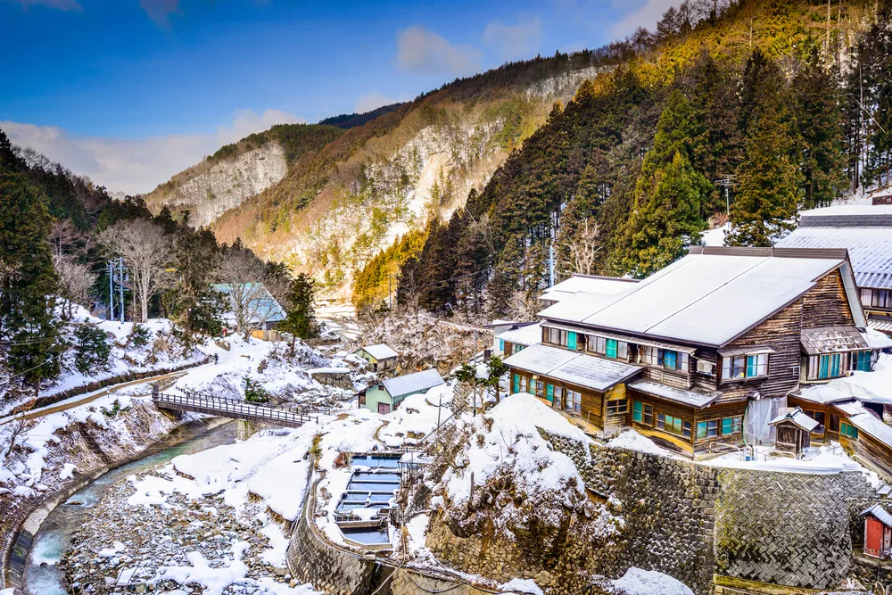

Shibuya, localizado em Tokyo, Japão, é um distrito conhecido por sua moda influente, vida noturna vibrante e pela icônica interseção de pedestres em frente à estação de trem. É um centro de cultura jovem e tendências urbanas, com uma variedade de lojas de moda, boutiques exclusivas e uma cena gastronômica diversificada que atrai tanto moradores quanto visitantes internacionais. Além disso, Shibuya oferece uma rica experiência de entretenimento, incluindo uma ampla seleção de bares, clubes e espaços de diversão noturna, refletindo a energia dinâmica e a vitalidade pulsante de Tokyo, tornando-o um destino essencial para explorar a vida urbana japonesa.
